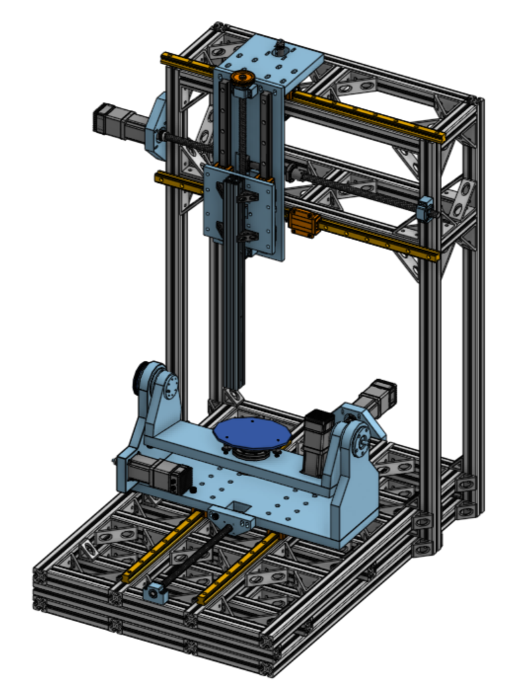
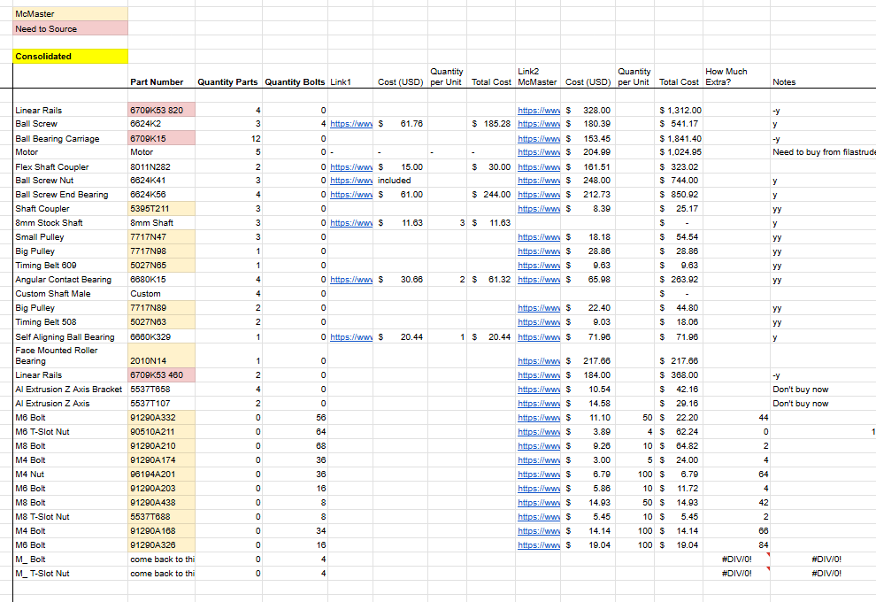
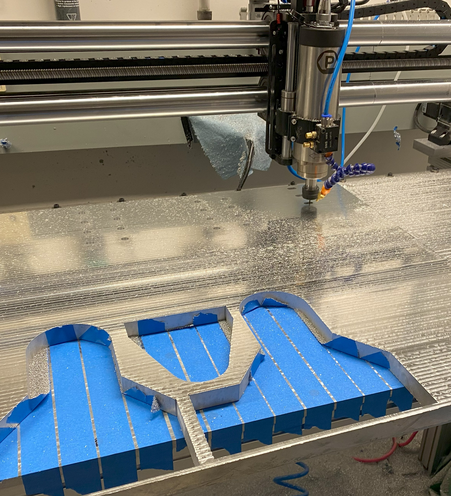
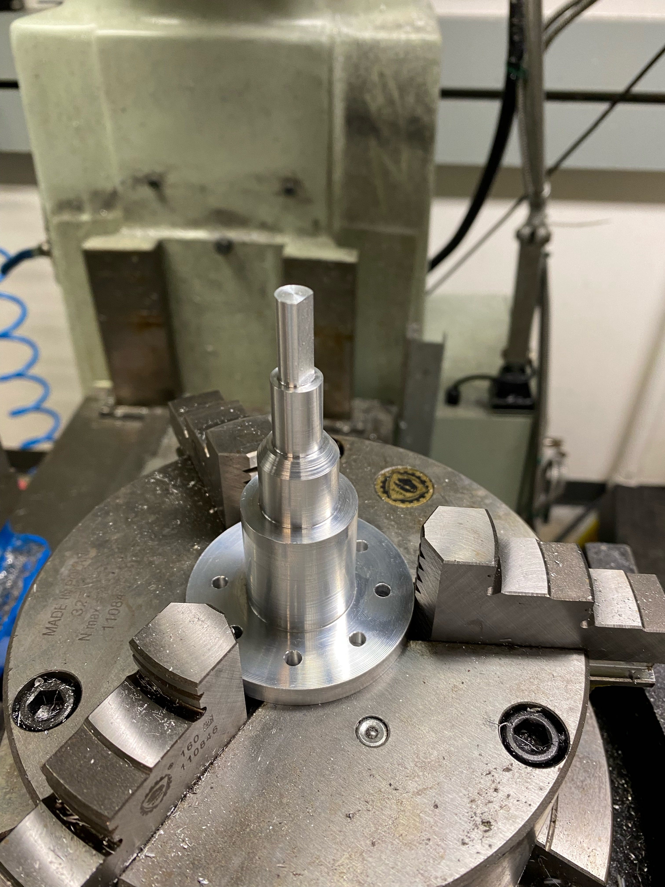
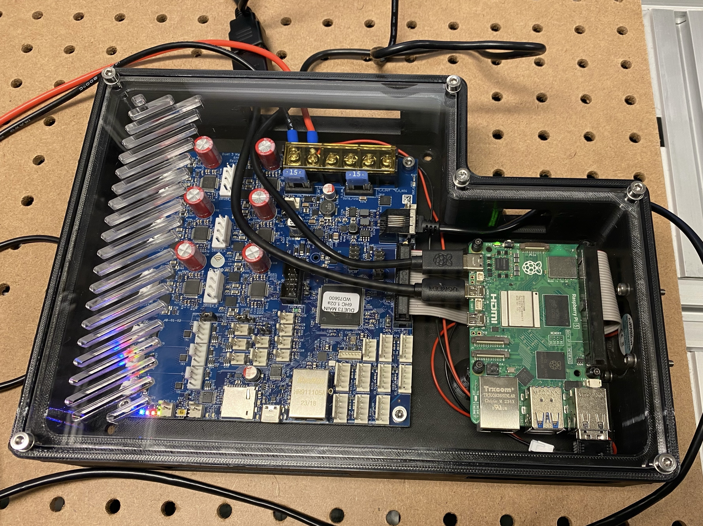
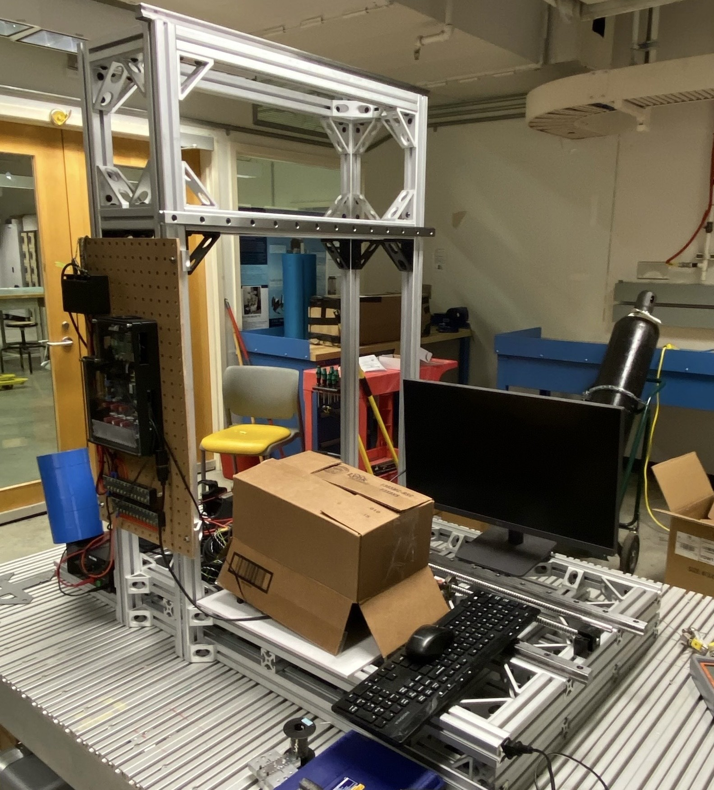
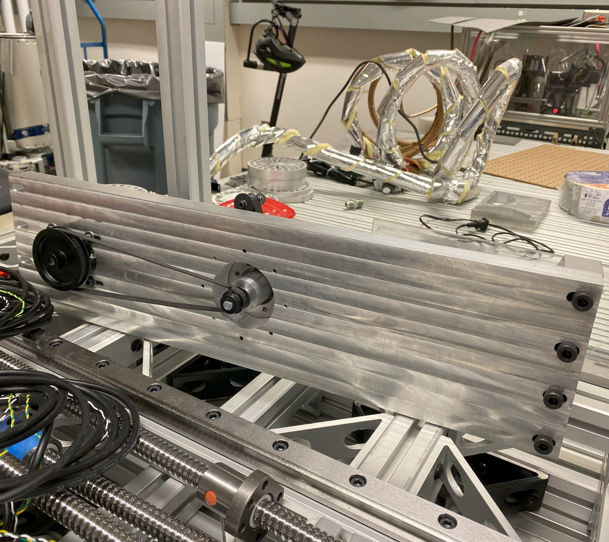
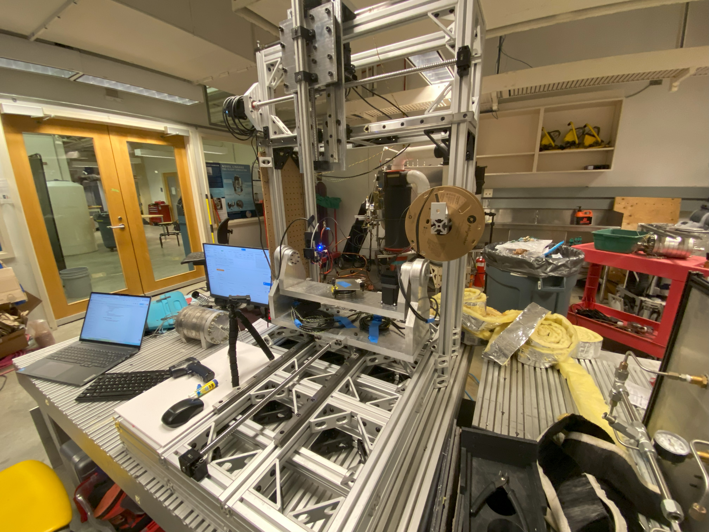
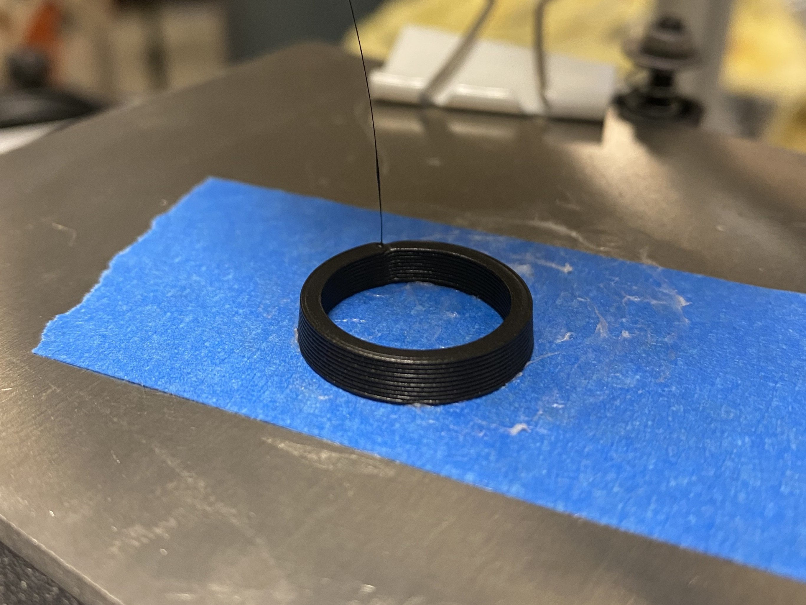
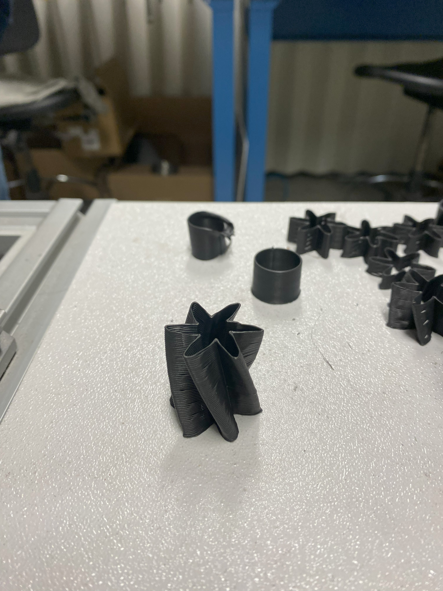

July 2024
Completed Onshape (CAD) assembly
I have been working at DISC Alloys for the past year on the design and development of a custom 5 axis 3D printer. This industrial printer is designed for adaptation with their novel metal printing technology, which will induce heavy stresses and loads (hence the requirement for a custom printer). I have worked full-time at DISC during the summers and part-time during the school year. I am currently working on the controls algorithm for the robot and developing a slicer for printing intricate parts.









